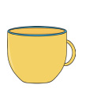
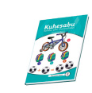

Exercise 2
Study the following pictures then answer the questions that follow.



1. Name the object that is near to the book.
2. Which object is far from the cup?
3. Which object is far from the book among the pen and the cup?
4. Which object is far from the pen?
5. Which object is near the cup?